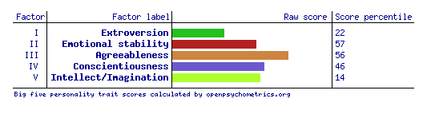
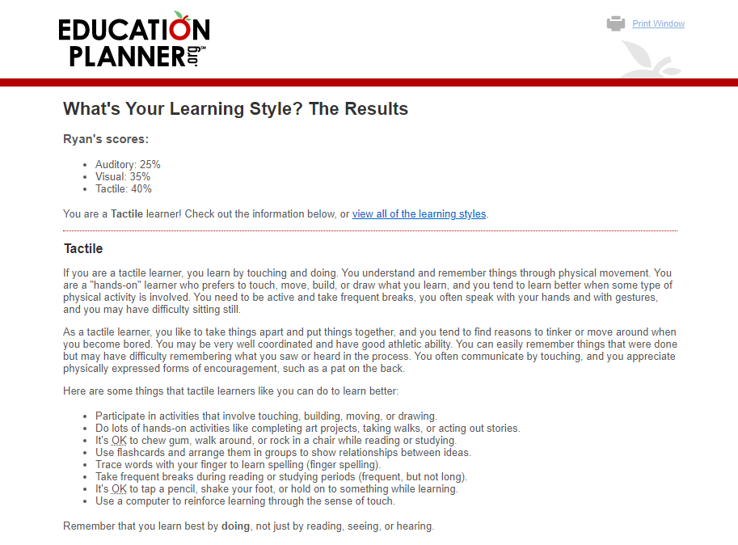
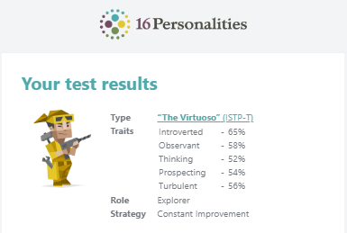

The test results show that I am more of an extroverted than an introvert, this means I tend to be quieter whilst in a group, though I am also observant and act upon logic rather than my own feelings. The results also show that I can be spontaneous rather than plan out everything. On the other hand, the tests indicate I am more likely to get stressed than to resist it although it is within the 56th percentile so it isn't a huge factor. it also indicated that I tend to be more hands on and tend to use trial and error, which may help with refining.
When forming a team, I should find people who are not as extroverted so there can be more communication within the team, as well as potentially finding someone who is more judging to help keep the work scheduled.
Personally, I think these result wont effect my work ethic within my team, although it may make me try to be less extraverted whilst working on the project. The project itself would preferably be hands on if possible, whilst I may work within a schedule to get more work done rather than being more spontaneous to benefit the team with organisation.
